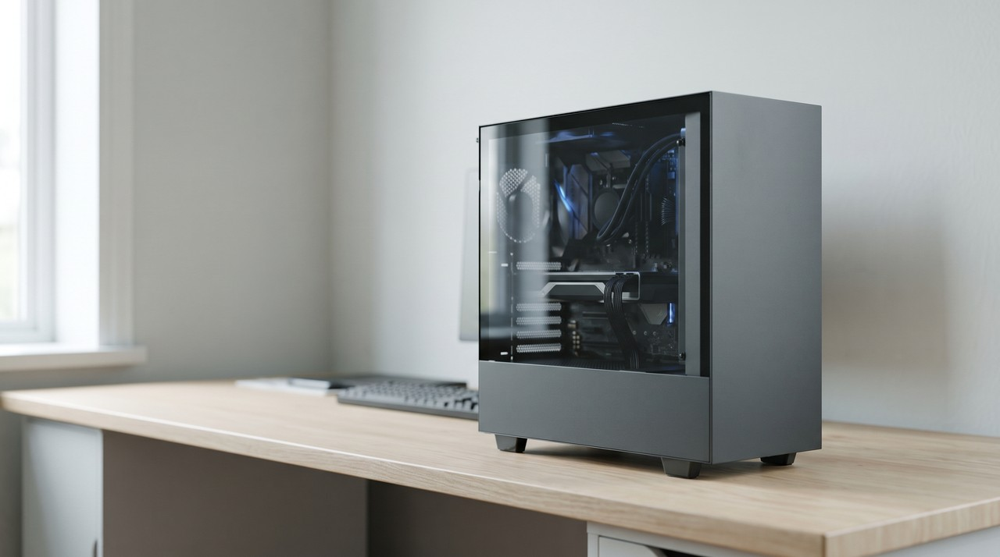

IndexTTS2 voice cloning: free and full of emotion, but read the bilibili licence before you sell with it
IndexTTS2 is a free text to speech model from bilibili that turns written words into audio. It copies a voice from a single reference clip with no training step, and it lets you add emotions like happy, sad or angry. The newer IndexTTS-2.5 was released on 10 August 2026, and it speaks Chinese, English, Japanese, Spanish and Arabic. It is not under the MIT licence. It uses the bilibili Model Use License, which is royalty free for most people but stops you from using its output to improve a different commercial AI model.
| IndexTTS2 and IndexTTS-2.5 | GPT-SoVITS | VoiceClone | |
|---|---|---|---|
| Price | Free download | Free download | One voice free, then $49 one time |
| Licence | bilibili Model Use License | MIT | A paid licence for the app, the engine inside is GPT-SoVITS |
| How it copies a voice | One reference clip, no training | A short clip, or a trained model for a closer match | 1 to 3 minutes of talking, then training on your own PC |
| Languages | Chinese and English on IndexTTS2, plus Japanese, Spanish and Arabic on 2.5 | Several, including English, Chinese and Japanese | English |
| Emotion control | Yes, from a second clip, eight sliders or a text prompt | Follows the tone of your reference clip | Follows the tone of your recording |
| Setup | uv, the command line and an NVIDIA card with CUDA | Python or a community package, command line | One file, START VoiceClone.bat |
Written by Inam. I made VoiceClone, the app in the last column, so read this table knowing I am not neutral about it. My other engineering work is on designesh.com. Last updated 28 October 2026.
You might be wondering about IndexTTS2 if you watch AI voice videos on YouTube. People often show it copying a voice from one short clip, and then they make that voice sound angry, scared or happy on command. The model is free, and the code sits on GitHub. So a lot of people want to know if they can use it for their own videos.
You can use IndexTTS2 for free, and the licence allows most people to use it in paid work, but it is not MIT and it comes with two real conditions. The model is from the Chinese video platform bilibili, so it uses the bilibili Model Use License. I think it pays to read what the licence actually says before you build a channel or a client job on it. Most videos skip that part.
What is IndexTTS2?
IndexTTS2 is a text to speech model, so you give it written text and it hands back speech. It does this zero shot, which just means it copies a voice straight from a reference clip with no training step. If you look at the IndexTTS GitHub page, it says the software clones a voice from a single reference audio clip. The team released IndexTTS2 there on 8 September 2025.
The same team released IndexTTS-2.5 on 10 August 2026. I read the README and it says the model now supports Chinese, English, Japanese, Spanish and Arabic. It also has faster inference than IndexTTS-2, and inference is just the process where the computer actually makes the audio. The older IndexTTS2 model page on Hugging Face is only tagged for English and Chinese.
How does IndexTTS2 control emotion?
That emotion control is why people get excited about it. Most free cloning models just copy the mood of your reference clip, so a calm clip means every generated line sounds calm too. IndexTTS2 is different because it separates the voice from the emotion. This means you can keep one person's voice but give it a totally different feeling.
The README lists four ways to do this. You can supply a second clip to copy the emotion from and set its strength from 0 to 1, or you can move eight sliders for happy, angry, sad, afraid, disgusted, melancholic, surprised and calm. You can also let it read the emotion straight from your script or a short written description. There is a random option too, but the README warns that using random reduces how closely the voice is cloned.
Can you use IndexTTS2 for commercial work?
I will explain what the licence says in normal words. The bilibili Model Use License gives you a worldwide and royalty free licence to use the model, and it never says non commercial. This means a YouTube channel or a small client job is not blocked by the licence itself. That makes it very different from F5-TTS, because the official model for that is non commercial.
The first real condition is about size. If you or your affiliated companies had more than 100 million monthly active users last month, or more than RMB 1 billion in revenue last year, you must ask bilibili for a separate licence. You have no rights at all until they give you that licence in writing. This condition does not touch a normal creator, but a big company has to follow it.
The second condition matters more for builders, because Section 3.4 says you cannot use the model or its outputs to improve another AI model unless that model is IndexTTS itself or non commercial. So you can sell a voiceover you made with IndexTTS2, but do not use its audio to train your own commercial voice model. The README also asks you to email indexspeech@bilibili.com for commercial use and cooperation, so write to them first if you build a product. I am an engineer and not a lawyer, so please read the licence yourself before you rely on it.
How hard is IndexTTS2 to install on Windows?
This model is not a simple program you double click to open. The README says you need uv, which is a fast installer for Python projects, and it requires uv to get a reliable install. You have to clone the code with git, run uv sync to install everything, and download the model files with the hf command. Then you start the web page by running uv run webui.py, and it opens at 127.0.0.1:7860 in your web browser.
Windows has one known snag. The README says DeepSpeed, a speed up library, may be difficult to install on Windows, and you can skip it by removing the --all-extras flag and adding the other options by hand. It also says to install CUDA Toolkit 12.8 or newer if you get CUDA errors, CUDA being NVIDIA's software for running AI on its graphics cards. The README gives no minimum graphics memory, and its only speed figure is on an RTX 4090, so plan on an NVIDIA card.

IndexTTS2 or GPT-SoVITS: which one should you use?
These systems are good at different things. IndexTTS2 is the right choice when you need emotion control or one of its five languages, as long as you are happy working in the command line. It copies a voice instantly from one clip, and that is very quick. But a zero shot copy like that is usually less close than a voice model that was trained on a few minutes of your own talking.
I chose GPT-SoVITS as the engine for VoiceClone, and I did that because of the licence and the training process. The code is under MIT, which is the simplest licence there is. It can be fine tuned on a few minutes of your own voice, and that gets your accent and rhythm much closer than one clip ever can. The engine is still a technical install on its own, and I explained it in GPT-SoVITS in plain words.
Where does VoiceClone fit?
I built VoiceClone for people who want their own voice without the Python setup and without a monthly bill. It is a desktop app for Windows 10 and 11 that runs GPT-SoVITS, and you start it just by double clicking START VoiceClone.bat. The first time you start it, the app downloads the engine, which is about 1.3 GB. After that it runs fully offline on your machine and nothing is ever uploaded.
You record 1 to 3 minutes of normal talking, and then the app checks the recording and trains the voice right on your own PC. An NVIDIA card makes this process fast, but a normal processor still works, it is just slower. The free version clones and fully trains one voice with 3 generations so you can check it. If you want more, the $49 one time license opens unlimited length, the word editor, retraining and exports.
To be fair about it, IndexTTS2 does things that VoiceClone does not do. It has emotion sliders, it speaks five languages on version 2.5, and it copies a voice from one clip with no training. If you need emotion control or another language and you are comfortable in the command line, use IndexTTS2. If you want your own English voice in a Windows app with no setup, VoiceClone is built for that. You can find my app on the download page, and I ask that you please only clone your own voice or a voice whose owner gave you clear permission.
FAQ
Is IndexTTS2 free?
Yes, the code and the model files are free to download from GitHub and Hugging Face. The project uses the bilibili Model Use License. This is royalty free for most people, but it has conditions for very large companies and for training other commercial AI models.
Can I use IndexTTS2 voices on YouTube?
The licence does not ban commercial use for a normal creator, so a monetized video is not blocked by the licence itself. You do still need the voice owner's permission to clone them. The README also asks anyone using it commercially to contact indexspeech@bilibili.com.
Does IndexTTS2 work on Windows?
Yes, but it is a command line install with uv, and the README warns that DeepSpeed may be difficult to install on Windows. You can skip DeepSpeed by leaving out the --all-extras flag, and an NVIDIA card with CUDA is expected.
What is the difference between IndexTTS2 and IndexTTS-2.5?
IndexTTS-2.5 came out on 10 August 2026. It adds Japanese, Spanish and Arabic to the existing Chinese and English, and it has faster inference. Both models copy a voice from one reference clip, and they both sit in the exact same GitHub repository.
Sources: the index-tts README and the bilibili Model Use License on GitHub, and the IndexTeam IndexTTS-2 model page on Hugging Face, all read on 28 October 2026, plus the VoiceClone product page on myvoiceclones.com.
Hear your own voice come back.
The free Windows app clones and fully trains one voice, yours, on your own PC. No account, no upload, and the download starts right away.